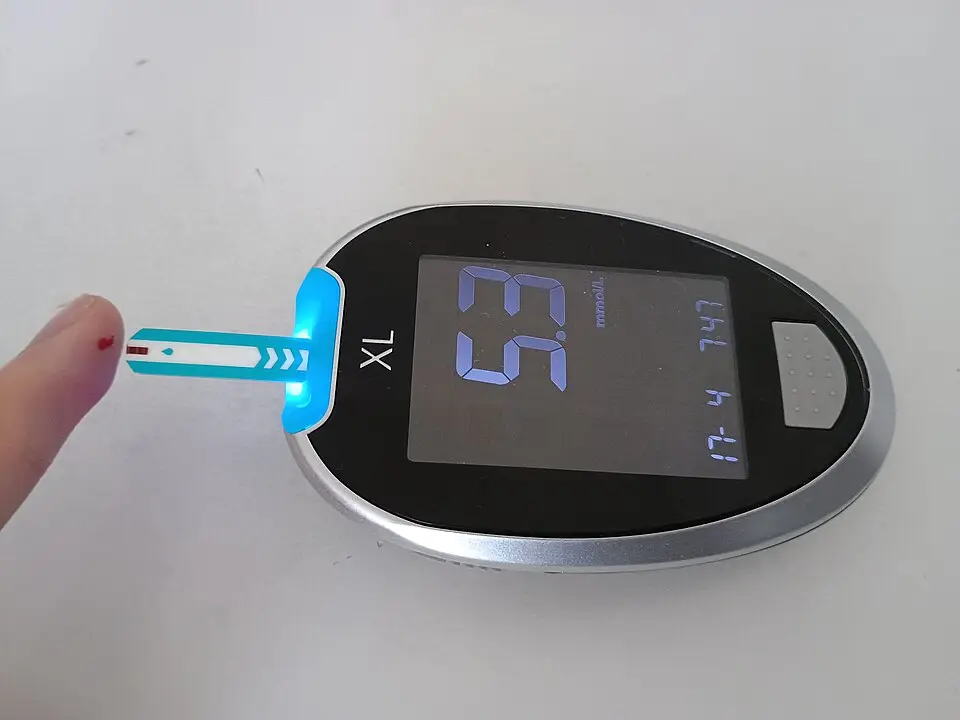

DX.6 — Hypoglycémie ou hyperglycémie
1. Définition et sémantique
Maladies endocriniennes, nutritionnelles et métaboliquesCIM-10, chap. IV
- La voie suit le diabète sucré ( CIM-10, E10–E14) et les autres troubles de la glycémie.
- Maladies de la thyroïde (CIM-10, E00–E07)Ce groupe réunit les atteintes de la glande thyroïde, comme l'hypothyroïdie.
- Autres maladies des glandes endocrines (CIM-10, E20–E35)Ce groupe réunit les atteintes de la parathyroïde, de l'hypophyse et des surrénales.
- Malnutrition et carences nutritionnelles (CIM-10, E40–E64)Ce groupe réunit les états de dénutrition et de carence en vitamines ou en oligoéléments.
- Obésité et excès d'apport (CIM-10, E65–E68)Ce groupe réunit l'obésité et les autres états d'hyperalimentation.
- Troubles métaboliques (CIM-10, E70–E90)Ce groupe réunit les troubles du métabolisme des acides aminés, des lipides, des minéraux et des liquides.
Diabète sucré ( CIM-10, E10–E14) et autres troubles de la glycémieCIM-10, E15–E16
- Hypoglycémie ( CIM-10, E16) ou crise hyperglycémique
- Diabète de type 1 (CIM-10, E10)Ce diabète résulte d'un déficit en insuline et expose à l'acidocétose.4
- Diabète de type 2 (CIM-10, E11)Ce diabète résulte d'une résistance à l'insuline et expose à l'état hyperosmolaire.4
- Diabète lié à la malnutrition ou autre diabète précisé (CIM-10, E12–E13)Ces formes rares sont rattachées à la malnutrition ou à une autre cause précisée.
- Diabète sucré sans précision (CIM-10, E14)Cette rubrique rassemble les diabètes dont le type n'est pas précisé.
- Autres troubles de la régulation de la glycémie (CIM-10, E15)Cette rubrique regroupe notamment le coma hypoglycémique non diabétique.
Hypoglycémie ( CIM-10, E16) ou crise hyperglycémiqueacidocétose diabétique ou état hyperosmolaire
Une hypoglycémie sévèreCet épisode de glycémie basse s'accompagne d'une perte de connaissance ou d'un besoin d'aide extérieure. L'AIPS d'Actrapid HM la définit par la perte de connaissance et recommande glucagon ou glucose intraveineux.8 est un manque de glucose qui altère le cerveau. Une crise hyperglycémique est une acidocétose diabétique ou un état hyperosmolaire hyperglycémique (EHH)4.
L'hypothermie accidentelle est une chute involontaire de la température centrale sous 35 °C2. Dans ce chapitre, le trouble glycémique est la cause du froid : le patient n'a plus assez de substrat ou d'insuline pour produire de la chaleur.
Ne pas confondre avec les entités voisines (voisines)L'alcool provoque hypoglycémie et cétoacidose (intoxication, DX.4)2. Le sepsis précipite l'acidocétose et refroidit à lui seul (DX.10)2. L'insuffisance surrénalienne aiguë et l'hypothyroïdie sévère causent hypoglycémie et hypothermie (DX.12 et DX.11)2. L'hypoglycémie imite un AVC (événement neurologique, DX.8)2. La noyade et l'exposition au froid refroidissent un patient dont la glycémie est normale (DX.5 et DX.3).2,8. Plusieurs causes coexistent souvent chez un même patient1.
2. Épidémiologie (Suisse, puis Europe)
À l'Inselspital de Berne, 439 adultes hypothermes (≤ 35 °C) ont consulté entre 2000 et 2019 (0,32 cas pour 1 000 consultations ; Habegger 2022 1). Parmi eux, 36 patients (8,2 %) présentent une hypo- ou hyperglycémie1. Aux États-Unis, la mortalité hospitalière est de 3 % des patients avec acidocétose, 5 % avec l'EHH et 8 % avec la forme mixte4. De plus, 10 % des acidocétoses sont euglycémiques, surtout sous inhibiteur de SGLT2 (consensus ADA-EASD 2024 4).
| Mesure (unité) | Résultat parmi les 439 cas | Lecture |
|---|---|---|
| Part des cas avec hypo- ou hyperglycémie (%) | 8,2 % | Causes multiples possibles : les parts ne s'additionnent pas à 100 % (Habegger 2022 1). |
| Part des cas avec affection médicale (%) | 34,2 % | (Habegger 2022 1) L'article cite l'hypoglycémie comme affection médicale la plus fréquente de son groupe. |
| Âge médian des causes médicales (ans) | 65 (intervalle interquartile 50–77)1 | Population plus âgée que celle des intoxications et noyades (49 ans)1. |
| Mortalité hospitalière globale (%) | 22,3 | Elle dépend de la cause, de la sévérité, de l'âge et du sexe. |
| Température médiane, intoxications ou affections médicales (°C) | 32,2 | Hypothermie le plus souvent légère à modérée. |
| Profil des crises hyperglycémiques | Acidocétose chez les jeunes avec un DT1 ; EHH chez les adultes âgés avec un DT2 | L'acidocétose diabétique survient surtout chez les jeunes et l'EHH surtout chez les adultes âgés (ADA 2024 4). |
| Causes, évolution et enjeux des crises | Infection et omission d'insuline ; admissions en hausse en dix ans | Les enjeux sont l'âge, les comorbidités et le retard diagnostique chez un patient froid : la glycémie capillaire coûte quelques secondes et manque trop souvent (sources 1,2). |
3. Physiopathologie
Cascade, de la molécule au signe clinique.
• Amorce (niveau moléculaire). Le glucose est le substrat principal du frisson2. Une hypoglycémie provoquée par l'insuline abaisse la température centrale de 0,51 °C en 25 °C d'ambiance, malgré une production de chaleur accrue, car la vasodilatation et la sudation dissipent la chaleur3. Dans l'acidocétose, le déficit d'insuline et l'excès d'hormones de contre-régulation (glucagon, adrénaline, cortisol) bloquent l'usage du glucose4.
• Développement (niveau cellulaire). Dans le froid, le frisson s'arrête quand la glycémie descend sous 2,5 mmol/l ; les sujets ne ressentent plus le froid234. Dans l'acidocétose, la diurèse osmotique déshydrate le patient et épuise le potassium total.
• Installation (niveau tissulaire). La température centrale passe sous 35 °C, parfois sans que le patient sente le froid2. Le muscle devient privé de substrat ; la perfusion tissulaire diminue et la production de chaleur s'effondre2,4.
• Maintien (niveau clinique). Le froid ralentit la remontée de la glycémie après une hypoglycémie. Les infections précipitent l'acidocétose et provoquent elles-mêmes de l'hypothermie4,5. Le glucose intraveineux rétablit le frisson en quelques secondes.
Complications et pronostic. L'hypoglycémie sévère provoque coma, convulsions ou déficit focal8. L'acidocétose et l'EHH exposent à l'œdème cérébral rare (moins de 0,1 % des événements, mortalité d'environ 30 %), à la thrombose et à l'hypokaliémie4. L'hypothermie ajoute le risque d'arythmie et d'arrêt cardiaque sous 30 °C chez le sujet jeune et sous 32 °C chez le sujet âgé2.
| Lésion ou perturbation | Exploration qui la montre | Thérapeutique qui la corrige (mécanisme) |
|---|---|---|
| Manque de substrat, frisson aboli | Glycémie capillaire immédiate | Glucose 10 % B. BraunDCI : glucose (Glucose 10 % B. Braun, n° 29550190). Classe : solution glucidique pour perfusion (ATC B05BA03). Groupe : solutions pour nutrition parentérale (ATC B05BA) ; chefs de file : acides aminés B05BA01, émulsions lipidiques B05BA02, glucose B05BA03. Indications (AIPS) : apport énergétique, traitement de l'hypoglycémie, solution vectrice. Posologie AIPS : adulte, maximum 40 ml/kg par jour et 2,5 ml/kg/h (0,25 g/kg/h) en perfusion ; l'AIPS ne fixe pas la dose d'un bolus de correction.9 : restitue le substrat du frisson |
| Déficit en insuline, cétogenèse | BHB capillaire ou sérique, pH veineux | Actrapid HMDCI : insuline humaine soluble (Actrapid HM, n° 44610). Classe : insuline à action rapide (ATC A10AB01). Groupe : insulines et analogues (ATC A10A) ; chefs de file : insuline humaine A10AB01, insuline asparte (NovoRapid) A10AB05, insuline NPH (Insulatard HM) A10AC01. Indications (AIPS) : diabète sucré. Posologie AIPS : besoins usuels de 0,3 à 1,0 UI/kg par jour par voie \1 ; l'AIPS décrit aussi des perfusions IV d'Actrapid HM à 0,05–1,0 UI/ml sans fixer le débit ; le schéma de l'acidocétose figure au point 11.8 : coupe la cétogenèse et fait entrer le glucose |
| Déshydratation osmotique | Pression artérielle, sodium, osmolalité | NaCl 0,9 %DCI : chlorure de sodium (NaCl 0,9 % Sintetica, n° 52041). Classe : solution d'électrolytes (ATC B05BB01). Groupe : solutions intraveineuses (ATC B05B) ; chefs de file : chlorure de sodium B05BB01, glucose B05BA03. Indications (AIPS) : remplacement liquidien isotonique, hyponatrémie. Posologie AIPS : adulte 9 ml/min (540 ml/h), maximum de routine 2000 ml par jour ; jusqu'à 2000 ml/h en choc.11 réchauffé : restaure le volume42 |
| Hypothermie centrale | Sonde épitympanique, œsophagienne ou vésicale | Isolation et réchauffement selon le stade (DX.1 à DX.5 pour les causes associées)42 |
4. Démarche diagnostique
Le médecin traite d'abord ce qui tue en minutes, puis cherche la cause du trouble glycémique.
Étape 1 — Chercher les drapeaux rouges. Chaque drapeau est cliquable : sa fenêtre dit pourquoi il est rouge.
| Entité | Signe ou examen qui tranche | Piège classique | Conduite immédiate si positif |
|---|---|---|---|
| 🚩 Hypoglycémie sévère avec comaLe cerveau manque de glucose : coma, convulsions ou déficit focal. Elle se corrige en quelques minutes, mais elle laisse des séquelles si elle dure.8 | Glycémie capillaire basse chez un patient dont la conscience est altérée | Attribuer le coma au froid ou à l'alcool sans mesurer la glycémie | Glucose IV (ou glucagon IM/SC), puis réchauffer |
| 🚩 Acidocétose sévèreBHB supérieur à 6,0 mmol/l, pH inférieur à 7,0, bicarbonate inférieur à 10 mmol/l, stupeur ou coma : soins intensifs.4 | Glycémie élevée ou diabète connu, BHB ≥ 3,0 mmol/l, pH veineux < 7,304 | Acidocétose euglycémique sous inhibiteur de SGLT2 : glycémie sous 11,1 mmol/l4 | Remplissage, insuline IV, potassium, soins intensifs |
| 🚩 État hyperosmolaire hyperglycémiqueHyperglycémie majeure et hyperosmolalité sans cétose ni acidose sévères ; installation en jours ou semaines ; déshydratation profonde ; adulte âgé avec DT2. | Glycémie très élevée, osmolalité élevée, BHB bas | Le prendre pour une simple déshydratation du sujet âgé | Remplissage prudent, insuline à faible débit, soins intensifs |
| 🚩 Infection précipitanteL'infection (urinaire, pneumonie) est la cause la plus fréquente de crise hyperglycémique. Un sepsis peut aussi refroidir le patient.4,5 (DX.10) | CRP, hémocultures, lactate, imagerie ciblée | Penser que le froid exclut l'infection | Antibiotiques précoces après prélèvements |
| 🚩 Trouble du potassiumLe potassium plasmatique est normal ou élevé à l'arrivée en acidocétose, mais il chute avec l'insuline. L'hypokalémie sévère (≤ 2,5 mmol/l) triple la mortalité.4 | Potassium plasmatique, ECG | Débuter l'insuline sans connaître le potassium | Potassium avant l'insuline si < 3,5 mmol/l4 |
| 🚩 Hypothermie avec risque d'arrêtTempérature centrale < 30 °C, PAS < 90 mmHg ou arythmie ventriculaire : transfert direct vers un centre ECLS.2 (DX.1) | Température centrale, ECG | Mesurer la température avec un thermomètre tympanique infrarouge | Voir point 11 et DX.12 |
Étape 2 — Sans drapeau rouge, la remontée jusqu'au diagnostic suit ces gestes.
• 2.1 Mesurer la glycémie capillaire chez tout patient hypotherme à la conscience altérée2.
• 2.2 Si la glycémie est élevée, mesurer le BHB et le pH veineux2.
• 2.3 Le médecin doit enregistrer un ECG et doser potassium, sodium, créatinine et osmolalité2.
• 2.4 Chercher le précipitant : infection, omission d'insuline, médicament, alcool, jeûne2.
• 2.5 Le médecin doit chercher les autres causes de froid : hypothyroïdie, surrénale, intoxication, traumatisme2.
• 2.6 Le médecin doit choisir le lieu de soins : service d'urgence, étage ou soins intensifs selon la gravité2.
5. Anamnèse ciblée et drapeaux rouges
Le médecin interroge le patient s'il répond, sinon les proches, le médecin traitant, le carnet de diabète et l'équipe de secours.
| Question clé | Raison physiopathologique : pourquoi elle change la décision |
|---|---|
| Diabète connu ? Traitement par insuline, sulfonylurée, inhibiteur de SGLT2 ? | L'insuline et la sulfonylurée causent l'hypoglycémie ; l'inhibiteur de SGLT2 cause l'acidocétose euglycémique. |
| Dernier repas ? Jeûne, vomissements, diarrhée ? | Le jeûne vide le glycogène hépatique : le glucagon n'agit plus, le glucose IV est nécessaire (AIPS GlucaGen)6. |
| Dose d'insuline omise ou doublée ? | Une omission cause la crise hyperglycémique ; un surdosage cause l'hypoglycémie. |
| Alcool ? | L'alcool inhibe la gluconéogenèse hépatique et renforce l'hypoglycémie ; il provoque aussi une cétoacidose. |
| Soif intense, polyurie, amaigrissement, vomissements, durée des symptômes ? | Heures à jours pour l'acidocétose ; jours à semaines pour l'EHH. |
| Fièvre, toux, brûlures urinaires, plaie ? | L'infection précipite la crise ; elle peut aussi refroidir seule. |
| Durée d'exposition au froid, vêtements, domicile chauffé ? | Le froid environnemental s'ajoute (DX.3) ; sans frisson, le patient se refroidit plus vite2. |
| Bêtabloquant, autres médicaments ? | Les bêtabloquants masquent les signes d'alarme de l'hypoglycémie (AIPS)8. |
| Maladies surrénalienne, thyroïdienne, hépatique, rénale ? Grossesse ? | Ces maladies causent l'hypoglycémie et le froid (DX.11, DX.12)2. |
Drapeaux rouges actionnables. Chacun impose une action immédiate : urgence (144), imagerie ou avis spécialisé2.
• Coma ou convulsionsIls évoquent une hypoglycémie sévère ou un EHH. La glycémie capillaire se fait en quelques secondes et change toute la conduite.8 : glycémie immédiate, glucose IV si basse.
• Respiration profonde, haleine d'acétone, vomissementsLa respiration de Kussmaul compense l'acidose métabolique ; l'haleine fruitée vient de l'acétone. Les vomissements et l'abdomen douloureux concernent plus de la moitié des acidocétoses.4 : gaz du sang, BHB, appel de la réanimation.
• Déficit neurologique focalUne hypoglycémie imite un AVC (hémiparésie, aphasie, signe de Babinski). La glycémie se mesure avant d'attribuer le déficit à un AVC.8 : glycémie, puis imagerie cérébrale si le déficit persiste (DX.8).
• Fièvre ou hypothermie avec hypotensionElles évoquent un sepsis précipitant. La température basse n'exclut pas une infection grave.4,5 : le médecin doit prélever des hémocultures, débuter les antibiotiques et demander l'avis des soins intensifs (DX.10).
6. Examen physique ciblé, région par région
Le médecin décrit d'abord le normal attendu, puis le pathologique. La valeur diagnostique de ces signes reste qualitative, sans sensibilité ni spécificité chiffrées2,6.
| Région | Normal attendu | Signes à rechercher (cliquer pour la technique, la valeur et le piège) |
|---|---|---|
| Vigilance | Patient éveillé, GCS 15, orienté2. | Niveau de conscience (AVPU, GCS)Technique : parler au patient, puis stimuler la douleur ; noter éveillé, verbal, douleur ou inconscient. Valeur : la conscience estime le stade d'hypothermie ; une chute brutale évoque l'hypoglycémie. Piège : un traumatisme, l'alcool ou une glycémie anormale abaissent la conscience sans froid profond ; le système suisse surestime alors le risque d'arrêt.2 · Convulsions, déficit focalTechnique : observer les mouvements, tester la force des quatre membres et la parole. Valeur : l'hypoglycémie peut donner une crise ou une hémiparésie. Piège : prendre le déficit pour un AVC et retarder le glucose.8 |
| Température | Température centrale de 37 ± 0,5 °C2. | Température centraleTechnique : sonde thermistance épitympanique chez le patient non intubé ; œsophagienne chez l'intubé ; vésicale ou rectale à l'hôpital. Valeur : seule mesure qui pose le stade. Piège : le thermomètre tympanique infrarouge, axillaire ou frontal est inexact en hypothermie.2 · FrissonTechnique : observer et palper les masséters et les pectoraux. Valeur : un frisson franc indique une température d'au moins 30 °C. Piège : il s'arrête sous 2,5 mmol/l de glycémie, par épuisement ou par sédation : son absence ne prouve pas un froid profond.2,3 |
| Peau et hydratation | Peau chaude et sèche ; muqueuses humides ; pli cutané qui s'efface. | Sueurs et pâleurTechnique : palper le front, le tronc et les paumes. Valeur : sueurs, faim, tremblements, pâleur et palpitations sont les signes neurovégétatifs de l'hypoglycémie. Piège : les bêtabloquants et le diabète ancien atténuent ces signes.8 · DéshydratationTechnique : inspecter les muqueuses, plisser la peau du thorax, mesurer pression et pouls. Valeur : orientent vers une crise hyperglycémique. Piège : la déshydratation d'une personne âgée est trompeuse.4 |
| Respiration | Fréquence de 12 à 20/min, sans odeur particulière4. | Respiration de KussmaulTechnique : compter la fréquence pendant une minute et observer l'amplitude. Valeur : respiration profonde qui compense l'acidose, avec haleine fruitée. Piège : absente dans l'EHH, sans acidose. |
| Cœur et circulation | Pouls régulier de 60 à 100/min, PAS d'au moins 90 mmHg4. | Pouls et pression artérielleTechnique : palper la carotide pendant une minute ; brassard adapté. Valeur : hypotension et tachycardie évoquent l'hypovolémie ; la bradycardie est une réponse au froid. Piège : une bradycardie sans traitement spécifique est attendue chez l'hypotherme.2 · ECGTechnique : électrodes adhésives, 12 dérivations. Valeur : arythmie ventriculaire, troubles du potassium, fibrillation auriculaire. Piège : la fibrillation auriculaire de l'hypotherme se résout avec le réchauffement.2,4 |
| Abdomen | Abdomen souple, indolore. | Douleur abdominaleTechnique : palper les quatre quadrants. Valeur : nausées, vomissements et douleur abdominale sont fréquents (plus de 50 %) dans l'acidocétose et rares dans l'EHH. Piège : ne pas conclure à un abdomen chirurgical sans corriger l'acidose.4 |
| Sites d'injection et pieds | Peau sans induration ni infection. | Lipodystrophie, infection cutanéeTechnique : inspecter et palper l'abdomen et les cuisses, puis les pieds. Valeur : la lipodystrophie retarde l'absorption de l'insuline ; une plaie du pied peut être le foyer infectieux. Piège : un changement brutal de site vers une zone saine provoque une hypoglycémie.8 |
7. Approche syndromique
Quatre syndromes se partagent la situation. Chacun se divise en signes fonctionnels (ce que le patient rapporte) et signes physiques (ce que le médecin constate).
| Syndrome | Signes fonctionnels (définition) | Signes physiques (geste de recherche) | Mécanisme |
|---|---|---|---|
| 7.1 Syndrome hypoglycémique | Signes neurovégétatifsSueurs, faim, tremblements, palpitations, céphalées : alarme de l'hypoglycémie. Ils sont atténués par les bêtabloquants. ; signes neuroglycopéniquesTroubles de la concentration, agitation, confusion, troubles de la parole et de la vue, somnolence. | Pâleur, sueurs, tremblementsPâleur du visage, peau moite au front, tremblement fin des mains tendues. Normal : peau sèche et mains immobiles. ; coma, crise ou hémiparésie ; glycémie capillaire basse | Libération d'adrénaline puis souffrance neuronale par manque de glucose |
| 7.2 Syndrome d'acidocétose | Polyurie, soif, vomissementsLe patient décrit des urines abondantes, une soif intense, des nausées et des douleurs abdominales sur quelques heures à jours. | Kussmaul, haleine fruitée, déshydratationRespiration profonde et rapide, odeur d'acétone, muqueuses sèches. Geste : compter la fréquence pendant une minute et sentir l'haleine. | Déficit d'insuline, cétogenèse, acidose métabolique, diurèse osmotique |
| 7.3 Syndrome hyperosmolaire | Soif, somnolence progressiveInstallation en jours à semaines chez un adulte âgé avec DT2 ; confusion croissante. | Déshydratation profonde, trouble de conscienceMuqueuses sèches, pli cutané persistant, hypotension, GCS abaissé. ; glycémie et osmolalité élevées | Insuline résiduelle qui évite la cétose mais pas l'hyperglycémie |
| 7.4 Syndrome d'hypothermie métabolique | Absence de sensation de froid, somnolence | Frisson aboliAucune contraction des masséters ou des pectoraux malgré le froid. Il apparaît sous 2,5 mmol/l de glucose et revient en quelques secondes après glucose IV. ; température centrale basseValeur inférieure à 35 °C à la sonde2. Normal : 37 ± 0,5 °C. | Manque de substrat et dissipation de chaleur par vasodilatation |
8. Diagnostic positif et critères
Hypoglycémie. Le diagnostic associe des signes évocateurs et une glycémie basse qui se corrige par le glucose. Dans une étude expérimentale, le frisson est aboli sous 2,5 mmol/l3. Les seuils de gravité de l'ADA (niveaux 1, 2 et 3) sont définis par le consensus 2024 4. L'AIPS décrit comme sévère tout épisode avec perte de connaissance8.
Acidocétose diabétique (consensus ADA-EASD 2024). Trois critères doivent être réunis4.
| Critère | Seuil | Précision |
|---|---|---|
| D — diabète connu ou glycémie | Glycémie ≥ 11,1 mmol/l (200 mg/dl) ou diabète connu4 | Environ 10 % des cas sont euglycémiques (glycémie < 11,1 mmol/l)4 |
| K — cétonémie | BHB ≥ 3,0 mmol/l4 | Sensibilité et spécificité supérieures à 90 %4 |
| A — acidose | pH < 7,30 ou bicarbonate < 18 mmol/l4 | Gravité : légère (pH > 7,25 à < 7,30), modérée (pH 7,0–7,25), sévère (pH < 7,0)4 |
L'acidocétose est sévère si le BHB dépasse 6,0 mmol/l, si le bicarbonate est sous 10 mmol/l ou si le patient est en stupeur ou en coma4. L'EHHL'EHH associe une hyperglycémie majeure et une hyperosmolalité, sans cétose ni acidose sévères. Les critères sont réunis lorsque la glycémie atteint 33,3 mmol/l (600 mg/dl) ou plus4. L'osmolalité efficace dépasse alors 300 mOsm/kg4. Le BHB reste sous 3,0 mmol/l4. Le pH atteint 7,30 ou plus4. Le bicarbonate atteint 15 mmol/l ou plus4. se résout quand l'osmolalité est inférieure à 300 mOsm/kg, la glycémie corrigée, la diurèse supérieure à 0,5 ml/kg/h et la conscience améliorée4. Une forme mixte est présente chez plus d'un tiers des crises.
Ce qui ne suffit pas. Une glycémie élevée seule ne suffit pas : il faut des cétones et une acidose. Une glycémie normale ne permet pas d'exclure une acidocétose sous inhibiteur de SGLT2. Les cétones urinaires ne mesurent pas le BHB et ne servent pas à juger la guérison. Le froid ne prouve pas l'origine glycémique : plusieurs causes coexistent1.
9. Examens complémentaires
9.a Gold standard.
Pour l'acidocétose, le gold standard est le BHB veineux ou capillaire. Un taux d'au moins 3,0 mmol/l a une sensibilité et une spécificité supérieures à 90 %4. Pour l'hypoglycémie, la référence est la glycémie mesurée au moment des signes, corrigée par le glucose. Pour l'hypothermie, la référence est la température centrale à la sonde2.
La glycémie capillaire tranche en premier. Le cliché montre un lecteur de glycémie dont la bandelette aspire une goutte de sang du bout du doigt

Lisez d'abord seul ce cliché (la glycémie capillaire tranche en premier) : cherchez vous-même le signe.
La copie annotée (la glycémie capillaire tranche en premier) porte les repères décrits ci-dessous.
- La goutte de sang capillaire se trouve au bout du doigt et entre dans la bandelette
- La bandelette réactive doit se remplir entièrement pour que la lecture soit valide
- L'écran affiche la valeur en mmol/l : ici 5,3, valeur normale, alors qu'une valeur basse chez un patient hypotherme commande le glucose IV13
- Une lecture normale n'exclut pas une acidocétose euglycémique, donc le médecin mesure aussi le BHB.
Ce que l'image décide. Le médecin mesure la glycémie capillaire chez tout patient à la conscience altérée. Si elle est basse, il donne du glucose IV. Si elle est élevée ou si le diabète est connu, il mesure le BHB et le pH veineux.
9.b Première intention.
| Examen | Indication et prescription | Résultat → signification → conduite |
|---|---|---|
| Glycémie capillaire | Tout patient hypotherme à la conscience altérée, à l'arrivée. | Basse (frisson aboli sous 2,5 mmol/l) → hypoglycémie → glucose IV2. Élevée → BHB et pH. Normale → autre cause. |
| BHB capillaire ou sérique | Glycémie élevée, diabète connu ou suspicion d'acidocétose euglycémique. | ≥ 3,0 mmol/l → cétose ; avec pH < 7,30 → acidocétose ; > 6,0 mmol/l → sévère4. |
| Gaz du sang veineux (pH, bicarbonate) | Dès que le BHB est élevé ; lire les gaz à 37 °C chez l'hypotherme4,2. | pH 7,0–7,25 → modérée ; pH < 7,0 → sévère, soins intensifs, bicarbonate à discuter4. |
| Potassium, sodium, créatinine, osmolalité | Avant l'insuline et toutes les 4 heures ensuite4. | Potassium < 3,5 mmol/l → potassium d'abord, insuline retardée4. Osmolalité élevée → EHH. |
| ECG à 12 dérivations2 | Tout patient à risque d'arythmie. | Ondes T pointues → hyperkaliémie ; arythmie ventriculaire → centre ECLS si hypothermie profonde. |
| Température centrale | Sonde épitympanique, œsophagienne ou vésicale. | Moins de 35 °C → hypothermie ; moins de 30 °C → risque d'arrêt2. |
9.c Alternatives.
| Examen | Indication, limite | Conduite |
|---|---|---|
| Cétones urinaires | Seulement si le BHB est indisponible ; le test détecte l'acétoacétate, pas le BHB, et le valproate donne des faux positifs. | Ne pas utiliser pour juger la guérison. |
| Trou anionique | Peu utile pour la guérison à cause de l'acidose hyperchlorémique due au NaCl. | Suivre le BHB et le pH. |
| Imagerie du foyer infectieux | Fièvre ou signes locaux, selon la clinique. | Antibiotiques et drainage si besoin. |
| Grossesse, enfant, insuffisance rénale | L'acidocétose euglycémique survient aussi pendant la grossesse. Aucun produit de contraste n'est nécessaire pour ce bilan initial. | Même BHB et même pH ; avis spécialisé. |
9.d Deuxième intention.
| Examen | Indication | Conduite |
|---|---|---|
| Hémogramme, CRP, hémocultures, lactate | Recherche d'un précipitant infectieux, surtout si froid ou hypotension. | Antibiotiques précoces si sepsis (DX.10)2. |
| TSH, cortisol | Hypoglycémie et hypothermie sans cause évidente (DX.11, DX.12)2. | Substitution après avis endocrinologique. |
| Bilan toxicologique, éthanolémie | Alcool ou drogues suspectés (DX.4)2. | Cétoacidose alcoolique : exclure le diabète. |
| HbA1c | Après la phase aiguë, pour juger l'équilibre du diabète. | Adapter le traitement et l'éducation. |
10. Arbre décisionnel
L'arbre écarte d'abord l'arrêt et l'hypoglycémie, puis traite la crise hyperglycémique.
• N0. Si le patient n'a pas de signes vitaux, le médecin lance la RCP et appelle un centre ECLS (voir DX.1) ; sinon, il passe à N12.
• N1. Si glycémie capillaire basse chez un patient à la conscience altérée → glucose IV (glucagon si aucun accès), réchauffer ; sinon → N2.
• N2. Si la glycémie est élevée ou si le diabète est connu, le médecin mesure le BHB, le pH veineux et le potassium ; sinon, il passe à N5.
• N3. Si le BHB atteint 3,0 mmol/l et le pH reste sous 7,30 (acidocétose), le médecin remplit, perfuse du potassium et débute l'insuline ; sinon, il passe à N42.
• N4. Si glycémie très élevée, osmolalité élevée et BHB bas → EHH : remplissage prudent, insuline à faible débit.
• N5. Si glycémie normale → chercher une autre cause du froid : sepsis, surrénale, thyroïde, intoxication, exposition.
• N6. Dans tous les cas → chercher le précipitant (infection, omission d'insuline, médicament) et réchauffer selon le stade.
11. Prise en charge selon les recommandations suisses
11.A But thérapeutique.
Le premier but est de corriger l'hypoglycémie en quelques minutes : le frisson revient en quelques secondes après le glucose IV3. Le deuxième but est de résoudre la crise hyperglycémique. L'acidocétose est résolue quand les cétones plasmatiques sont inférieures à 0,6 mmol/l et que le pH veineux atteint 7,3 ou le bicarbonate 18 mmol/l4. L'EHH est résolu quand l'osmolalité passe sous 300 mOsm/kg et que la diurèse dépasse 0,5 ml/kg/h342. Le troisième but est de rétablir une température centrale de 37 °C, à 5 °C/h au plus2.
11.B Moyens : urgences, ordre du traitement, pharmacologie, non pharmacologique, situations spéciales.
Urgence — conduite chronologique : hypoglycémie sévère chez un patient hypotherme.
Étape 1 — 0 à 2 minutes. Le médecin mesure la glycémie capillaire2. Il couche le patient à plat, l'isole du froid et évite tout mouvement actif.
Étape 2 — 2 à 5 minutes. Le médecin pose une voie intraveineuse, ou intra-osseuse à défaut, et injecte du glucose, car il rétablit le frisson2,3. Le patient conscient et frissonnant reçoit des hydrates de carbone par voie orale, par exemple du thé chaud sucré2.
Étape 3 — Sans accès veineux. Le médecin doit injecter 1 mg de GlucaGen® par voie SC ou IM6. Le glucagon agit peu chez le patient à jeun, alcoolisé ou en insuffisance surrénalienne6.
Étape 4 — À 10–15 minutes. Si le patient ne répond pas, le médecin ajoute du glucose IV2.
Étape 5 — Après le réveil. Le patient reçoit des hydrates de carbone oraux, car ils évitent la rechute2.
Étape 6 — Ensuite. Le médecin réchauffe le patient selon le stade, cherche la cause de l'hypoglycémie et le précipitant, et surveille la glycémie plusieurs heures2.
Urgence — conduite chronologique : acidocétose ou EHH chez un patient hypotherme.
Étape 1 — 0 à 10 minutes. Le médecin libère les voies aériennes, monitore le patient et pose deux voies2,4. Il mesure la glycémie, le BHB, le pH, le potassium, la créatinine et l'osmolalité2,4. Il enregistre un ECG, mesure la température centrale et isole le patient du froid2,4.
Étape 2 — Première heure. Le médecin remplit avec du NaCl 0,9 % ou une solution équilibrée à 500–1000 ml/h pendant 2 à 4 heures, réchauffée à 38–42 °C chez l'hypotherme2,4. La prudence s'impose chez les patients âgés, enceintes, cardiaques ou rénaux4.
Étape 3 — Potassium. Le médecin contrôle le potassium avant l'insuline4. S'il est sous 3,5 mmol/l, il perfuse du potassium et retarde l'insuline jusqu'à ce que le taux dépasse 3,5 mmol/l4. Le consensus ADA-EASD 2024 donne un débit de 10 mmol/h4, que l'AIPS du chlorure de potassium ne fixe pas12. Dès que le potassium passe sous 5,0 mmol/l, le médecin en ajoute à la perfusion pour viser 4 à 5 mmol/l4, selon le protocole de l'établissement.
Étape 4 — Insuline. Selon le consensus ADA-EASD 2024, l'insuline soluble IV se débute à débit fixe de 0,1 UI/kg/h dans l'acidocétose48. Dans l'EHH sans cétose, le débit est de 0,05 UI/kg/h48. Dès que la glycémie passe sous 13,9 mmol/l, le médecin ajoute du glucose à 5–10 %9 et réduit l'insuline à 0,05 UI/kg/h48. L'AIPS d'Actrapid HM décrit la perfusion IV à 0,05–1,0 UI/ml et ne fixe pas ces débits8.
Étape 5 — Bicarbonate. Le médecin doit réserver le bicarbonate au pH inférieur à 7,04.
Étape 6 — Précipitant. Le médecin recherche et traite l'infection, puis administre des antibiotiques après les prélèvements4.
Étape 7 — Réchauffement. Le médecin applique l'isolation et le réchauffement externe. Il transfère le patient vers un centre ECLS si la température est inférieure à 30 °C, la PAS inférieure à 90 mmHg ou l'arythmie ventriculaire présente (voir DX.1)2.
Étape 8 — Limites dans l'EHH. La glycémie ne baisse pas de plus de 5 à 6,7 mmol/l/h2,4. Le sodium baisse de moins de 10 mmol/l en 24 heures2,4. L'osmolalité baisse de 3 à 8 mOsm/kg/h au plus, sinon l'œdème cérébral menace2,4.
Hors urgence : ordre du traitement.
• 1. Mesures générales. Mesurer la température centrale, isoler, couvrir la tête, éviter les mouvements actifs tant que le patient est modérément hypotherme. Le patient en HT I frissonne et mange des hydrates de carbone.
• 2. Pharmacologique. Le tableau ci-dessous résume les médicaments ; les doses viennent de l'AIPS, sauf mention.
| Médicament | Rôle | Dose, voie et durée | Précautions, effets indésirables, interactions |
|---|---|---|---|
| Glucose 10 % B. BraunDCI : glucose (Glucose 10 % B. Braun, n° 29550190). Classe : solution glucidique pour perfusion (ATC B05BA03). Groupe : solutions pour nutrition parentérale (ATC B05BA) ; chefs de file : acides aminés B05BA01, émulsions lipidiques B05BA02, glucose B05BA03. Indications (AIPS) : apport énergétique, traitement de l'hypoglycémie, solution vectrice. Posologie AIPS : adulte, maximum 40 ml/kg par jour et 2,5 ml/kg/h (0,25 g/kg/h)9. Enfant : la solution à 10 % est recommandée pour l'hypoglycémie (AIPS Glucose 20 % B. Braun)10. | Hypoglycémie ; ajout dès 13,9 mmol/l de glycémie en acidocétose24 | Adulte : au maximum 40 ml/kg par jour et 2,5 ml/kg/h (0,25 g/kg/h) en perfusion IV9 ; la durée dépend de la glycémie et l'AIPS ne fixe pas la dose d'un bolus de correction.9 | Contre-indiqué en cas d'hyperglycémie ne répondant pas à 6 unités d'insuline par heure, de delirium tremens chez un déshydraté, de choc aigu (AIPS)9. L'arrêt brusque d'une perfusion rapide provoque une hypoglycémie de rebond. |
| GlucaGen®DCI : glucagon (GlucaGen®, n° 31489). Classe : hormone hyperglycémiante glycogénolytique (ATC H04AA01). Groupe : hormones glycogénolytiques (ATC H04A) ; chef de file : glucagon H04AA01. Indications (AIPS) : hypoglycémie sévère. Posologie AIPS : adulte 1 mg SC ou IM ; enfant 0,5 mg (moins de 25 kg) ou 1 mg.6 | Hypoglycémie sans accès veineux | Adulte : 1 mg en dose unique par voie SC ou IM6. Enfant : 0,5 mg si moins de 25 kg, 1 mg au-delà6. Sans réponse en 10 minutes, le médecin injecte du glucose IV.6 | Inefficace si réserves de glycogène épuisées ; contre-indiqué en cas de phéochromocytome ; prudence en cas d'insulinome ou de glucagonome ; utilisable pendant la grossesse et l'allaitement (AIPS)6. |
| Actrapid HMDCI : insuline humaine soluble (Actrapid HM, n° 44610). Classe : insuline à action rapide (ATC A10AB01). Groupe : insulines et analogues (ATC A10A) ; chefs de file : insuline humaine A10AB01, insuline asparte (NovoRapid) A10AB05, insuline NPH (Insulatard HM) A10AC01. Indications (AIPS) : diabète sucré. Posologie AIPS : besoins de 0,3 à 1,0 UI/kg par jour par voie SC8. L'AIPS décrit des perfusions IV d'Actrapid HM à 0,05–1,0 UI/ml sans fixer le débit8. Le consensus ADA-EASD 2024 donne 0,1 UI/kg/h pour l'acidocétose48. | Acidocétose, EHH | Adulte : 0,3 à 1,0 UI/kg par jour par voie SC8. Le consensus ADA-EASD 2024 donne 0,1 UI/kg/h en perfusion IV dans l'acidocétose4, et l'AIPS décrit la perfusion IV à 0,05–1,0 UI/ml sans fixer ce débit.8 | Déplace le potassium vers l'intérieur des cellules et provoque une hypokaliémie. Les bêtabloquants masquent l'hypoglycémie. L'alcool augmente le risque d'hypoglycémie. Ne jamais donner Insulatard (NPH) par voie IV.8 |
| Kaliumchlorid 7,45 % B. BraunDCI : chlorure de potassium (Kaliumchlorid 7,45 % B. Braun, n° 29552). Classe : additif de perfusion, électrolyte (ATC B05XA01). Groupe : additifs pour solutions intraveineuses (ATC B05X) ; chefs de file : chlorure de potassium B05XA01, bicarbonate de sodium B05XA02. Indications (AIPS) : apport potassique substitutif. Posologie AIPS : perfusion IV lente en dilution ; maximum quotidien de l'adulte 200 mmol si K+ sérique supérieur à 2,5 mmol/l, 400 mmol si inférieur à 2,0 mmol/l12. Le consensus ADA-EASD 2024 donne 10 mmol/h en acidocétose4, débit que l'AIPS ne fixe pas. | Hypokalémie de l'acidocétose | Adulte : perfusion IV lente en dilution, avec un maximum quotidien de 200 mmol si le K+ sérique dépasse 2,5 mmol/l et de 400 mmol s'il est inférieur à 2,0 mmol/l.12 Le consensus ADA-EASD 2024 donne 10 mmol/h en acidocétose.4 | Ne jamais l'injecter en bolus12 ; contrôler le potassium toutes les 4 heures4. |
| NaCl 0,9 % Sintetica | Remplissage de l'acidocétose et de l'EHH | Adulte : 9 ml/min (540 ml/h), au maximum 2000 ml par jour en routine et jusqu'à 2000 ml/h en choc.11 Le consensus ADA-EASD 2024 donne 500–1000 ml/h pendant 2 à 4 heures4, et l'AIPS ne fixe pas ce débit. | Prudence en cas d'insuffisance cardiaque, rénale ou hépatique.11 |
• 3. Non pharmacologique. L'isolation et le réchauffement passif suffisent à l'hypothermie légère isolée. Le réchauffement actif externe (couvertures chauffantes, air pulsé, soluté à 40 °C) vaut pour HT II et HT III à circulation stable2. L'éducation thérapeutique et l'équipe de diabétologie préviennent la récidive.
• 4. Surveillance des complications. En cas d'EHH, une prophylaxie antithrombotique est recommandée sauf soupçon de thrombose.
Forme non compliquée. Le patient éveillé, frissonnant, à glycémie corrigée, reste au chaud, mange et boit chaud et sucré ; il est surveillé2,6. Les mesures initiales évitent une nouvelle perte de chaleur et restaurent le substrat.
Situations spéciales.
| Situation | Conduite |
|---|---|
| Femme enceinte ou allaitante | L'insuline ne traverse pas le placenta et reste utilisable ; l'hypoglycémie comme l'hyperglycémie augmentent le risque de malformation et de mort fœtale (AIPS Actrapid)8. GlucaGen® s'emploie pendant la grossesse et l'allaitement (AIPS)6. L'acidocétose euglycémique est possible pendant la grossesse4. Pendant l'accouchement, le glucose 20 % expose à l'hyponatrémie, surtout avec l'ocytocine (AIPS Glucose 20 % B. Braun)10. |
| Enfant | Glucagon 0,5 mg si moins de 25 kg, 1 mg au-delà ; glucose 10 % pour l'hypoglycémie ; surveillance étroite du rebond chez le petit enfant (AIPS)610. |
| Sujet âgé | L'EHH et la forme mixte dominent ; le remplissage tient compte des comorbidités. Le risque d'arrêt hypothermique apparaît dès 32 °C chez lui2. |
| Insuffisance rénale ou hépatique | Le besoin d'insuline baisse (AIPS Actrapid)8. Le glucose et le NaCl demandent de la prudence en insuffisance rénale (AIPS)911. |
Social et professionnel. Le diabète relève de la LAMal. Une hypothermie par exposition accidentelle relève de la LAA chez les personnes assurées ; la LPGA définit l'accident. L'arrêt de travail dépend de la durée de l'hospitalisation. L'AIPS impose d'informer le médecin de chaque hypoglycémie sévère et de rééquilibrer le diabète8. L'aptitude à la conduite après une hypoglycémie sévère est à réévaluer par le médecin traitant selon la fréquence et la sévérité des épisodes. La LAI est discutée en cas de séquelles durables.
11.C Surveillance.
| Paramètre | Fréquence | Seuil d'alerte |
|---|---|---|
| Glycémie capillaire | Toutes les heures pendant l'insuline IV, répétée après une hypoglycémie | Glycémie basse, ou chute de plus de 5 à 6,7 mmol/l/h dans l'EHH4 |
| Potassium | 2 heures après le début de l'insuline, puis toutes les 4 heures4 | Sous 3,5 mmol/l : arrêter l'insuline, poser du potassium4 |
| pH et BHB | Réguliers jusqu'à la guérison | pH sous 7,0 ou BHB croissant4 |
| Température centrale | Continue pendant le réchauffement | Stable ou en baisse : échec du réchauffement externe |
| Diurèse, osmolalité, sodium | Horaire puis toutes les 4 heures4 | Diurèse sous 0,5 ml/kg/h4 |
11.D Pronostic, critères de guérison et de sortie, recherche.
La mortalité hospitalière de la cohorte hypotherme de Berne est de 22,3 % et dépend de la cause1. Dans les études américaines, la mortalité de l'acidocétose est de 3 % et celle de l'EHH de 5 %4. Dans une cohorte américaine de 1 211 crises, une hypokaliémie sévère (≤ 2,5 mmol/l) s'associe à une mortalité hospitalière accrue (odds ratio ajusté 4,9)7. Une hypoglycémie sous traitement s'y associe aussi (odds ratio ajusté 4,8)7. Les réadmissions pour crise hyperglycémique atteignent 10 à 20 % et surviennent souvent dans les deux semaines147. Le patient sort lorsque la crise est résolue selon les critères du point 11.A, qu'il est normotherme, mange et qu'un plan d'insuline et d'éducation est établi. Le consensus 2024 de l'ADA et de l'EASD définit l'état de la recherche sur les nouveaux critères de diagnostic et de guérison147.
12. Prévention
Primaire. Le patient traité par insuline porte toujours des sucres rapides et sa carte de diabétique8. Il informe son entourage de la conduite à tenir, dont l'injection de glucagon SC. Il limite l'alcool, qui renforce l'hypoglycémie. Les « règles des jours de maladie » préviennent l'acidocétose, surtout sous inhibiteur de SGLT2. Contre le froid, les mesures de prévention de l'hypothermie s'appliquent chez les patients malades ou blessés2. Ce lien relie le risque du point 2 : les patients âgés et polymorbides sont les cibles prioritaires1.
Secondaire. Après chaque hypoglycémie sévère, le médecin rééquilibre le diabète et cherche la cause. Après une crise hyperglycémique, il évalue le précipitant et le risque de récidive.
Tertiaire. L'éducation thérapeutique, le suivi de diabétologie et la prise en charge des comorbidités limitent la récidive et les séquelles. Les patients âgés fragiles bénéficient d'une évaluation cognitive et fonctionnelle.
13. Points clés
Le médecin mesure la glycémie capillaire chez tout patient hypotherme à la conscience altérée.
Le glucose IV rétablit le frisson en quelques secondes ; le glucagon agit peu chez le patient à jeun ou alcoolisé.
L'acidocétose associe une glycémie ≥ 11,1 mmol/l ou un diabète connu, un BHB ≥ 3,0 mmol/l et un pH < 7,304.
Le médecin contrôle le potassium avant l'insuline et retarde l'insuline si le potassium est sous 3,5 mmol/l4.
Le froid n'exclut pas un sepsis : l'infection est le premier précipitant de la crise hyperglycémique.
L'hypothermie sous 30 °C, une PAS sous 90 mmHg ou une arythmie ventriculaire conduit à un centre ECLS2.
14. Pièges et questions fréquentes à l'examen fédéral suisse
Question 1. Un patient hypotherme est comateux : que mesure-t-on en premier ?
Réponse : La glycémie capillaire : l'hypoglycémie supprime le frisson et le glucose IV le rétablit2,3.
Question 2. Le glucagon suffit-il chez un patient alcoolisé et à jeun ?
Réponse : Non : sans réserves hépatiques de glycogène, il agit peu ou pas. On donne alors du glucose IV (AIPS GlucaGen®)6.
Question 3. Quelle dose de glucagon donne-t-on à un enfant de 20 kg ?
Réponse : \16.
Question 4. Quels sont les trois critères de l'acidocétose ?
Réponse : Glycémie ≥ 11,1 mmol/l ou diabète connu, BHB ≥ 3,0 mmol/l, pH < 7,30 ou bicarbonate < 18 mmol/l4.
Question 5. Une glycémie à 9 mmol/l exclut-elle l'acidocétose ?
Réponse : Non : l'acidocétose euglycémique existe, surtout sous inhibiteur de SGLT24.
Question 6. Quand débuter l'insuline si le potassium est à 3,0 mmol/l ?
Réponse : Après avoir remonté le potassium au-dessus de 3,5 mmol/l4.
Question 7. Quel est le débit d'insuline IV de l'acidocétose ?
Réponse : Le consensus ADA-EASD 2024 donne 0,1 UI/kg/h, puis 0,05 UI/kg/h avec du glucose 5–10 % dès 13,9 mmol/l48. L'AIPS d'Actrapid HM autorise la perfusion IV sans fixer ces débits8.
Question 8. Les cétones urinaires servent-elles à juger la guérison ?
Réponse : Non : on suit le BHB et le pH.
Question 9. L'hypothermie exclut-elle l'infection dans une acidocétose ?
Réponse : Non : le sepsis refroidit et précipite la crise ; on prélève et on traite4,5.
Question 10. Quels signes d'alarme de l'hypoglycémie les bêtabloquants masquent-ils ?
Réponse : Les signes neurovégétatifs (sueurs, tremblements, palpitations) selon l'AIPS8.
Sources bibliographiques
- [S1] Habegger K, Brechbühler S, Vogt K, et al. Accidental Hypothermia in a Swiss Alpine Trauma Centre – Not an Alpine Problem. Int J Environ Res Public Health 2022;19(17):10735. PMID 36078450, doi 10.3390/ijerph191710735 (texte intégral Europe PMC PMC9518193), consulté le 27.10.2026.
- [S2] Paal P, Pasquier M, Darocha T, et al. Accidental Hypothermia: 2021 Update. Int J Environ Res Public Health 2022;19(1):501. PMID 35010760, doi 10.3390/ijerph19010501 (texte intégral Europe PMC PMC8744717), consulté le 27.10.2026.
- [S3] Gale EA, Bennett T, Green JH, MacDonald IA. Hypoglycaemia, hypothermia and shivering in man. Clin Sci (Lond) 1981;61(4):463-469. PMID 7026128, doi 10.1042/cs0610463 (résumé), consulté le 27.10.2026.
- [S4] Umpierrez GE, Davis GM, ElSayed NA, et al. Hyperglycemic Crises in Adults With Diabetes: A Consensus Report (ADA, EASD, JBDS, AACE, DTS). Diabetes Care 2024;47(8):1257-1275. PMID 39052901, doi 10.2337/dci24-0032 (texte intégral PMC11272983), consulté le 27.10.2026.
- [S5] Leikin JB, Leikin SM, Korley FK, Wang E. Disturbances due to cold. Dis Mon 2026:102185. PMID 42392879, doi 10.1016/j.disamonth.2026.102185 (résumé), consulté le 27.10.2026.
- [S6] AIPS (Swissmedicinfo), information professionnelle de GlucaGen® (glucagon), Novo Nordisk, n° Swissmedic 31489, texte lu dans l'export AIPS du 08.10.2026.
- [S8] AIPS (Swissmedicinfo), information professionnelle de Actrapid HM et Insulatard HM (insuline humaine), Novo Nordisk, n° Swissmedic 44610, texte lu dans l'export AIPS du 08.10.2026.
- [S9] AIPS (Swissmedicinfo), information professionnelle de Glucose 10 % B. Braun (glucose), n° Swissmedic 29550190, texte lu dans l'export AIPS du 08.10.2026.
- [S10] AIPS (Swissmedicinfo), information professionnelle de Glucose 20 % B. Braun (glucose), n° Swissmedic 29550212, texte lu dans l'export AIPS du 08.10.2026.
- [S11] AIPS (Swissmedicinfo), information professionnelle de NaCl 0,9 % Sintetica (chlorure de sodium), n° Swissmedic 52041, texte lu dans l'export AIPS du 08.10.2026.
- [S12] AIPS (Swissmedicinfo), information professionnelle de Kaliumchlorid 7,45 % et 14,9 % B. Braun (chlorure de potassium), n° Swissmedic 29552, texte lu dans l'export AIPS du 08.10.2026.
- [S7] Pasquel FJ, Tsegka K, Wang H, et al. Clinical Outcomes in Patients With Isolated or Combined Diabetic Ketoacidosis and Hyperosmolar Hyperglycemic State: A Retrospective, Hospital-Based Cohort Study. Diabetes Care 2020;43(2):349-357. PMID 31704689, doi 10.2337/dc19-1168 (résumé PubMed), consulté le 28.10.2026.
- [S13] Roy Zuo, « Blood glucose meter 09 », Wikimedia Commons, licence CC BY-SA 4.0, fichier File:(20250417) Blood glucose meter 09.jpg, consulté le 10.11.2026.